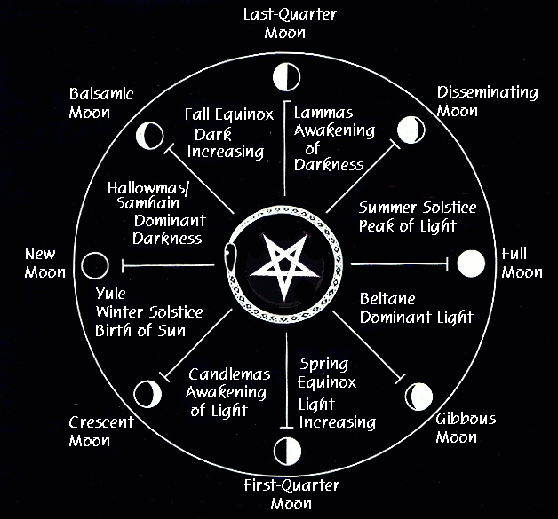

NOTE: THE DATES LISTED HERE ARE FOR PEOPLE IN THE NORTHERN HEMISPHERE. IF YOU ARE IN AUSTRALIA, SOUTH AFRICA, SOUTH OF THE EQUATOR, PLEASE CLICK HERE
Satanic Holidays are based upon the natural cycles. What is known as "Satanism" is humanity's original religion. The holidays listed below precede Christianity from hundreds to thousands of years. Because the Christian Church could not murder everyone, the original Pagan holidays were taken and Christianized in attempts to convert as many as possible.
The truth behind all of these special dates is that the planets and astral world are aligned a certain way that greatly enhances certain workings, giving them extra power that would not be possible if they were started during other times. Covens of old met regularly during the full moon cycles and during the special dates listed below, as the planetary and astral energies were very powerful at these times of the year. In order to systematically and forcibly remove spiritual knowledge and power from our people, the Christian Church stole these holidays and replaced them with fictitious nonsense. There is a true and a false with nearly everything and one can see the glaring lie of Christianity in that everything in that foul program is and has been stolen from the original religions and replaced with imposter characters, places, and rites where nothing spiritual is left. Another example is how fundamentalist Christians have been working to destroy the last Pagan/Satanic practices of the Yule Season and Winter Solstice, such as removing Santa Claus, the Yule tree, and other evidence that reveals the true origins of the Yule and replace them solely with the Nazarene and ilk. For more information and research, type in Jehovah�s Witnesses into any internet search engine such as google.com and add 'Pagan holidays.' The information about this is extensive and proves beyond any doubt that these holidays have NOTHING WHATSOEVER TO DO WITH CHRISTIANITY.
The fictitious Nazarene has nothing to do with Xmas. Xmas coincides with the Winter Solstice and the Yule season, the shortest day of the year. December 25th is the birth date of the Persian God Mithra, and the Roman Holiday of Saturnalias. The tree, the decorations, baking, gifts and celebrating have NOTHING to do with the Nazarene. These are carry-overs from original Pagan celebrations. The Yule tree is really symbolic of the human soul, with the trunk being representative of the spine, the branches, the 144,000 nadis [pathways of the vril/witchpower/chi], and the lights being symbolic of the nadis all lit up with Satan's Serpentine Energy. The star on top of the tree is representative of the risen Serpent of Satan.
"Easter" was stolen from Astaroth. Originally known as "Ashtar." This holiday coincides with the Vernal Equinox of spring when day and night are of equal length. Known as "Eastre" to the Anglo-Saxons. As the Goddess of fertility, she was associated with rabbits and eggs. The Christians stole this holiday and twisted its meaning. Other names include: Easter, Eastre, Eos, Eostre, Ester, Estrus, (Estrus is when an animal goes into heat; mating season) Oestrus, Oistros, and Ostara. Again, the "Lamb of God" was stolen from the Zodiac sign of Aries the Ram which occurs every spring.
"All Saint's Day" corresponds with "Halloween/Samhain."
"Assumption Day" coincides with "Lammas Day" of the "Summer Solstice." For more information see The New Testament and Christian Religion and Exposing Christianity
YULE/WINTER SOLSTICE
December 22nd-23rd
Although the Solstice begins on the 21st-22nd of December, the 23rd is a very special Personal Day for Father. The Sun enters the sign of the Goat which represents Satan. The Night of December 22nd- the eve of December 23rd is the Highest Satanic Holy Night of the year. (This was dictated from him personally). It is the day after the longest night of the year. Again we look forward to beginnings, as the days will begin to get longer as the year goes on. This is a time for intense celebration and devotion to Lord Satan. Indulgence, decorating the home, family celebrations and get-togethers. The Night of Dec. 22nd should be spent in dedication to Satan. This is an excellent time to focus on planning for the year. If one wishes to make personal resolutions this is a good time to do so.
At the high point of a ritual, personal resolutions can be written on paper and burned. Father Satan is always there to help us in having the strength to carry through with our intentions. After the rite, intense celebrating should take place.
The Yule holidays for Satanists are times of indulgence and taking pleasure in the physical and material aspects of life. Actually, Xmas trees and wreaths are Pagan in origin, so there is no reason not to celebrate this holiday with our families with gift giving, baking, and decorating. This is what the TRUE Yule season is about, not that filthy worthless Nazarene.
Link To More Information:
Baal Berith and The Yule
IMBOLC/CANDLEMAS/FEAST OF FIRE
Early February
(Pronounced "Im-bulk")
THE EVE OF BELTANE
April 30th
THE SUMMER SOLSTICE
June 23-24th
LAMMAS DAY/LUGHNASADH
August 1st
Under Construction [Joy of Satan Ministries has been doing research as to the true meanings of these holidays]. New Age Pagan books and resources are way off about most of these dates in the year and completely miss the true spiritual foundations behind them. We will update the remaining dates when we have accurate information about them. All of these dates in the year are powerful spiritual points in the year, as well as the feasting and partying that take place along with them.
SAMHAIN/HALLOWMAS/HALLOWEEN
October 31st
SPRING EQUINOX
March 21-23 [Sun should be 0 degrees into Aries]
This is the time for beginning major workings such as the Magnum Opus, which is begun at 3:00 am, during the hour of Satan.
AUTUMN EQUINOX
September 21-23 (Sun, 0 degrees into Libra)
The equinoxes are good times to begin things. Rituals for putting things into action.
BACK TO SATANIC RITES & CELEBRATIONS MAIN PAGE
© Copyright 2005, 2011, Joy of Satan Ministries;
Library of Congress Number: 12-16457